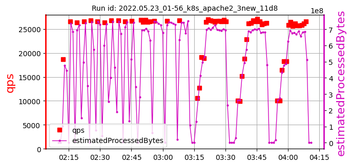
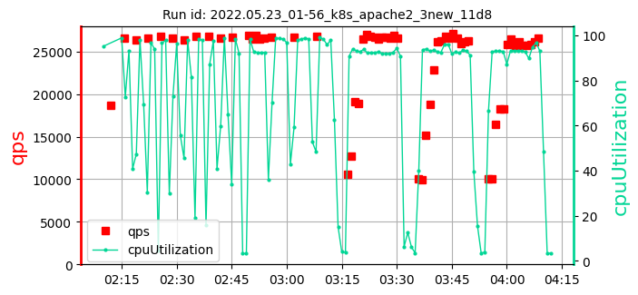
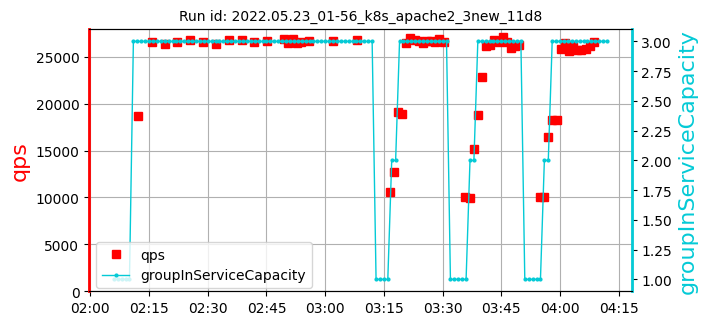
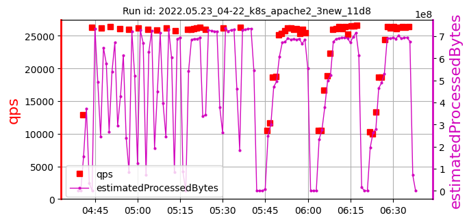
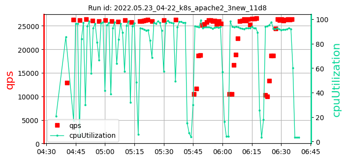
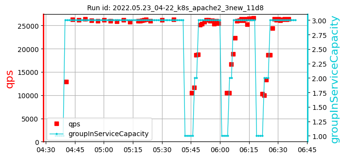

k8s_apache2_3newsamples: 2date: 2022-06-22 15:06:00.835218 | max: 384 min: 262 mean: 321 |
max: 26733 min: 26025 mean: 26436 |
max: 98.68 min: 97.27 mean: 97.86 |
max: 71 min: 24 mean: 48 | ||
| 1. test id: 2022.05.23_01-56_k8s_apache2_3new_11d8 [raw data] | run settings: cpu=64 pods=3 treads=70 sc_min=14 warmup=130 | Duration s | qps | CPU % | Err | |
|  |  |  | [262, 335, 365] 321 | [26668, 26662, 26733] 26688 | [98.68, 98.43, 97.38] 98.16 | 71 |
| 2. test id: 2022.05.23_04-22_k8s_apache2_3new_11d8 [raw data] | run settings: cpu=64 pods=3 treads=70 sc_min=14 warmup=130 | Duration s | qps | CPU % | Err | |
|  |  |  | [280, 301, 384] 322 | [26025, 26216, 26313] 26185 | [97.27, 97.73, 97.65] 97.55 | 24 |
k8s_apache2_3newsamples: 2date: 2022-06-22 15:06:00.835218 | max: 384 min: 262 mean: 321 |
max: 26733 min: 26025 mean: 26436 |
max: 98.68 min: 97.27 mean: 97.86 |
max: 71 min: 24 mean: 48 |